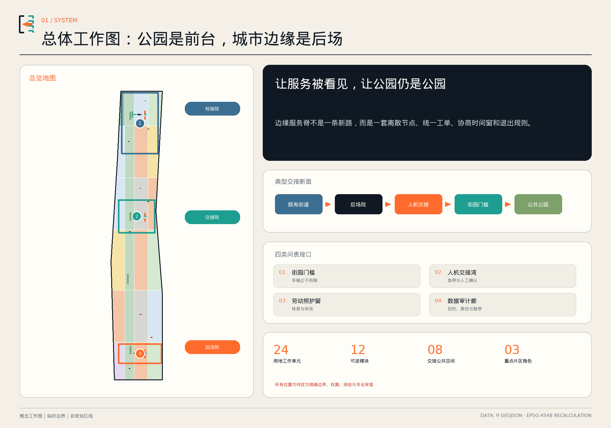
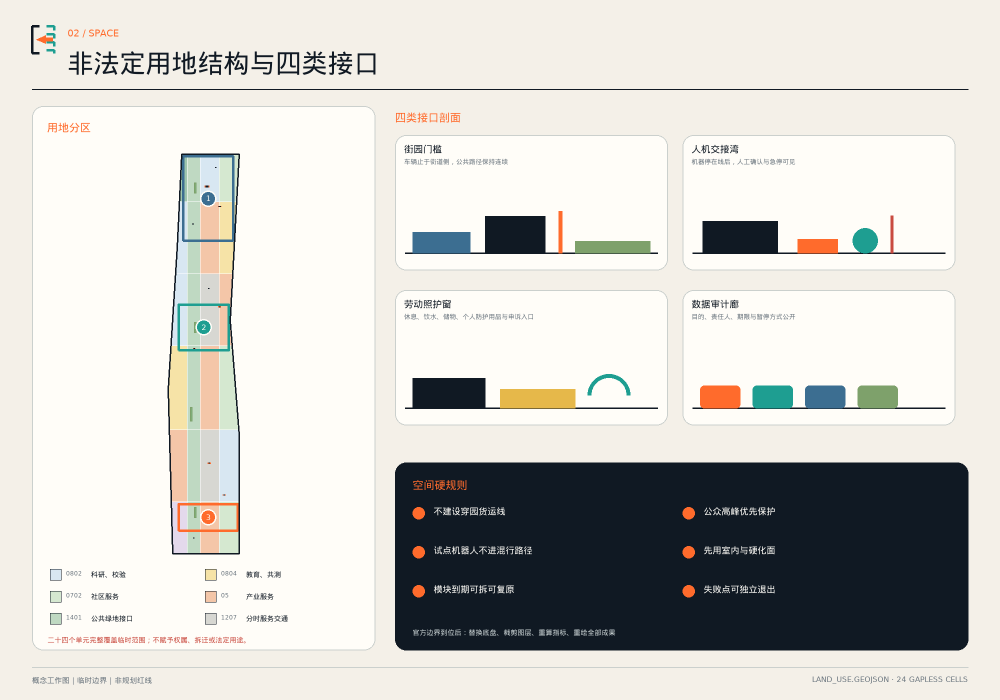
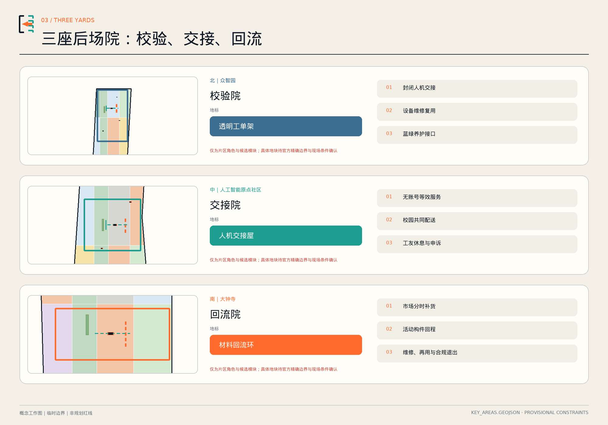
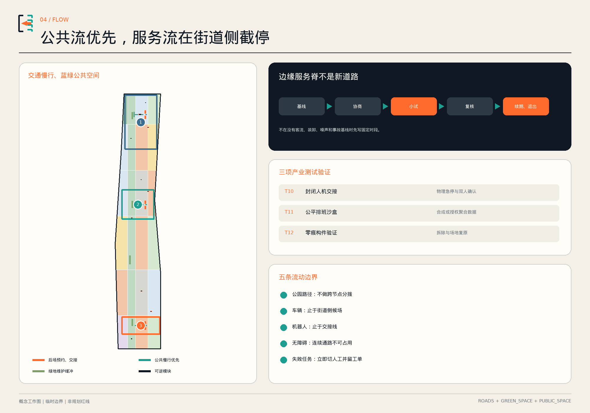
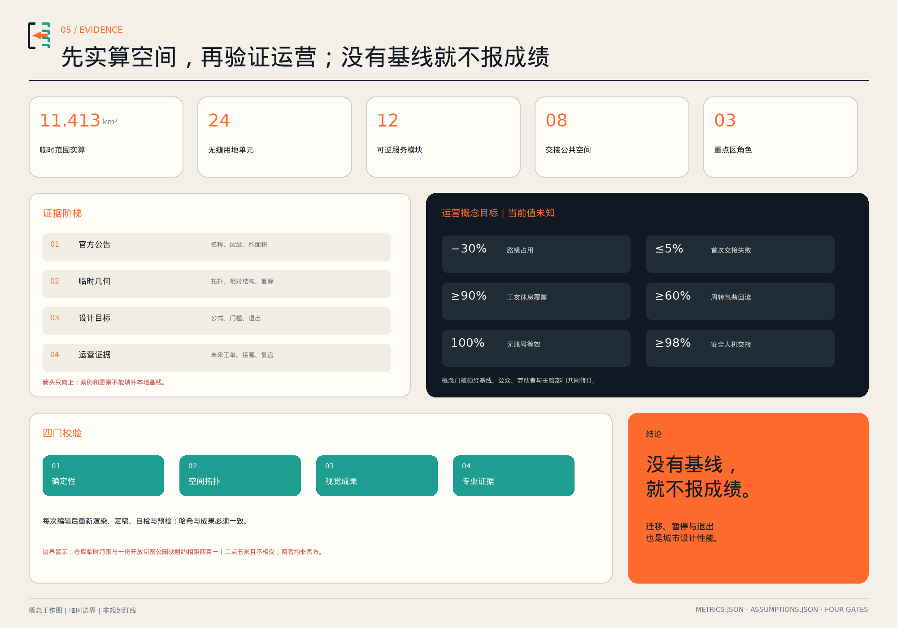

京张后场：把送达、交接、维修与回收做成AI城市的公共基础设施
据2026年8月公开报道，京张遗址公园二期已开放；下一步不是再画一条景观轴，而是让AI城市每天赖以运转的送达、交接、维修与回收有位置、有负责人、有人工兜底，也有退出机制。
京张后场 / JINGZHANG BACKSTAGE
让服务被看见，让公园仍是公园。 后场不是穿园货运线，而是布置在公园城市侧边缘、站城门槛、校园入口与既有硬化场地上的分布式公共基础设施。机器在这里停下，责任在这里交接，坏掉的东西在这里被维修，包装与设备在这里找到回程。

设计依据与资料清单
本方案从一个已经改变的现状出发：公开报道显示京张铁路遗址公园二期已开放，南北约九公里的公共廊道基本形成。因此本次城市设计不把“贯通公园”当作尚未完成的功绩，也不在绿道上叠加一条新的物流走廊；它把设计对象转向公园城市侧的日常后场——物资如何在街道侧停下、机器如何把任务交给人、养护工具在哪里维修、活动构件如何回收、一线人员在哪里休息与申诉。报道中的长度和面积只用于判断工作阶段，不作为边界或法定指标。来源 来源
正式依据分为四级。一级是征集公告与 agent 任务书，提供约 43.6 平方公里统筹研究、约 11.4 平方公里总体设计、三处重点区域和 agent.1—agent.6 的任务框架；二级是国家与北京公开法规政策，约束城市设计、无障碍、AI治理、物流和循环利用；三级是官方项目背景，帮助理解既有公园、分期和多主体协作；四级才是仓库的临时几何，用于让方案可计算、可审查、可替换。任何四级资料都不能升级为官方红线。来源 来源
资料缺口是设计条件而不是被隐藏的脚注。目前缺少官方精确 SITE_BOUNDARY、三处 KEY_AREA polygon、权属、道路红线、控规、市政、消防、文保和完整现状建筑调查。仓库 issue #846 记录临时 SITE 与一份 OSM 公园映射最近约相距 412.5 米且不相交；两者都不是官方答案。因此所有落位均标为“概念建议、待现场测绘与主管部门确认”，官方 polygon 到位后须重做九个 GeoJSON、全部面积、图件与 PDF，而不是只改一行数字。来源 空间数据
成果包由双语正文、九个空间图层、指标与三类矩阵、五组双语核心图、A3 文册、A0 展板和离线交互页组成。每个空间主张都能回到 feature，每个已知数值都能回到公式；暂时无法测量的运营绩效保留为 unknown 并另列概念目标。这个证据结构响应控规深度城市设计的可核验性，但不冒充控规成果。深度 标准
三层范围工作框架
统筹研究范围回答后场为何是 AI 生态问题。在约 43.6 平方公里层面，人工智能企业、高校、园区、社区与公共空间不仅交换知识，也持续交换设备、样品、备件、工具、包装、工单与责任。若只设计“前台展示”，这些流动会挤进路缘、楼门和步道，成本由骑手、保洁、维修者和居民承担。方案建立“验证—送达—交接—使用—维修—回流—再验证”的创新链，把后场质量视为世界级 AI 高地的基础能力。来源 深度
总体设计范围回答后场如何不伤害公园。公告总体设计层级约 11.4 平方公里，计算底图另采用仓库明确标注为 provisional 的 polygon；两者不能互相证明。方案采用“一条边缘服务脊、三座后场院、四类问责接口”。所谓“脊”不是连续新路，而是统一编号、时间窗、标线和责任卡连接起来的离散节点；院与院之间仍走既有合法城市道路，公园步道不承担南北向货运、分拨或无人配送。roads.geojson 只画八段离散的街侧服务、公共到达与横向交接样段，其合计长度是关系检查值，不是连续路线或建设量。空间数据 指标
重点区域回答三种不同的产业任务。北部众智园角色为“校验院”，先在受控环境验证机器人、人机接管和可拆构件；中部北京 AI 原点社区角色为“交接院”，连接高校、企业、社区与无账号公共服务；南部大钟寺角色为“回流院”，支撑市场补货、活动后场、维修再用和材料回程。三处只沿用公告名称与南北顺序；“校验—交接—回流”是本方案提出的设计角色，不是公告既定定位。具体地块仍由官方 polygon、权属与现场条件决定。空间数据 指标
四类接口是：街园门槛截停车辆，人机交接湾绑定急停和人工确认，劳动照护窗提供饮水休息与申诉，数据审计廊公示目的、负责人、数据期限和暂停方式。固定的是“公园优先、人工可接管、无账号等效、到期可退出”四条协议；可变的是模块位置、时段、运营主体和技术供应商。这样即使精确边界变化，方案的公共价值仍能迁移，空间数据则能完整重算。来源 深度
统筹研究范围产业与未来城市研究
“京张后场”把 AI 产业生态从发布会延伸到产品生命全周期：装备先在校验院进行安全和互操作测试，通过后进入交接院的小规模公共采用；出现故障返回维修链，包装、备件与退役设备进入回流院，证据再反馈研发。高校贡献方法与共测，企业承担产品和保险责任，城市运营方管理空间与工单，社区和劳动者代表拥有暂停建议权。产业价值不是多建仓库，而是缩短失败发现时间、减少重复配送、形成可复用的测试协议和维修能力。来源 来源
六个全球案例按“机制可移植、规模不照搬”阅读：
| 案例 | 可借机制 | 京张转译 | 明确限制 |
|---|---|---|---|
| 巴黎 Chapelle International | 城市物流底层与体育、城市农业、餐饮等公共/混合功能共置 | 街道侧共同收货，公园侧保持公共界面 | 运营方数据不当作独立成效，预留铁路能力不等于已运行 来源 |
| 南安普敦共同配送中心 | 多供应商货物合单，减少并提高后续配送效率 | 园区共同采购规则先于设施建设 | 潜在减排不能替代北京基线 来源 |
| 巴黎联网装卸位试验 | 蓝牙/App 自报与光学、地面传感分别或叠加测试 | 京张另加纸面登记与人工兜底 | 复盘表明无法强制使用时，纯申报系统不可靠 来源 |
| George Mason—Starship | 受管理校园内持续七年的机器人送餐运行，车队超过 60 台 | 京张另设停止线、人工接管与无手机服务 | 该页面不证明交接点或远程协助；校园也不等于开放街区 来源 |
| 赫尔辛基 Stara | 采购、工具、维修、租赁、再利用同链管理 | 形成“收货—诊断—维修/退役—去向台账” | 市政资产体系不等于多租户平台已验证 来源 |
| 新加坡 Punggol ODP | 多协议中间件、数字孪生事件模拟与历史回放 | 京张另建最小工单编号和分权机制，不建全知平台 | 角色权限是本方案选择；机器人编组在来源中仍属未来计划 来源 |
品牌识别不用另一条“智能光带”，而采用一枚开口方括号：左侧实线代表城市公共底盘，右侧虚线代表可替换的服务模块，中间橙色箭头代表交接。中文口号“让服务被看见，让公园仍是公园”，英文为 “Make Service Visible. Keep the Park a Park.”；路面和界面只用耐久小尺度标记，不设置高亮商业大屏。年度“OPEN BACKSTAGE / 后场开放周”公开失败工单、维修课、无障碍共测和退出演练，传播的是可信运营而非技术炫技。来源 深度
未来城市形态由“前台连续、后场离散”构成：连续的是公园的公共体验，离散的是嵌入城市边缘的服务院落；连续的是统一协议，离散的是可撤换模块。这种形态适合多权属、快速迭代和既有空间更新，也把维护岗位、物流规则、数据责任与空间设计放在同一张图上。它不承诺特定企业入驻，不指定单一供应商，不把平台锁定当基础设施。来源 标准
总体设计范围城市更新与控规深度城市设计
总体结构为“一条边缘服务脊、三座后场院、四类接口、十二个场景”。边缘服务脊由街道侧合法到达、分时装卸、短距离人工交接和统一工单组成，不在公园内铺设连续货运设施。四类接口分别落在公园入口、站城门槛、校—园界面和城市蓝绿边缘的候选硬化场地；每个候选点都要先完成权属、客流、无障碍、消防、文保、树木和噪声核验。空间工作图仅用于比较界面关系。空间数据 深度
land_use.geojson 将临时 SITE 精确分割为 24 个无缝工作单元，用科研、教育、社区服务、商业服务、道路与绿地代码表达角色组合。它的价值是让面积复算、图纸和分期使用同一拓扑底盘，而不是对未知地块重新定性；每个 feature 都写明 conceptual_character_cell_not_statutory_zoning。当官方地块与控规到位，24 单元应被正式数据替换，而不是被保留为既成结论。空间数据 标准
城市更新采用“先用室内与硬化场地、再谈新增建设”的次序。十二个建筑基底只表示可逆模块的候选承载量：三座院承担校验、交接与回流，九个小模块承担维修、无账号服务、工友休息、校园共配、市场补货、材料回流与活动后场。它们不是现状建筑，也不对应拆迁对象；总基底面积由图层投影复算，建筑高度、容积率、密度、退线和消防间距均保持待确认。空间数据 指标
典型界面断面遵循“既有街道/建筑入口—后场院—人机交接台—街园门槛—公园公共空间”。车辆止于街道侧；批准时段内由人或获准辅助工具完成最后短距离，公众高峰为保护时段。院内可有封闭测试面，试点阶段机器人不得越过交接线进入公众混行路径。绿地侧不新增永久锚固是试点目标，所有构件先通过拆装与复原验证。来源 深度

重点区域详细设计
北部众智园·PROOF YARD / 校验院。 角色是“先在院内证明，再谈进入城市”。组合包括封闭低速人机交接测试面、设备维修廊、慢速机器人库和蓝绿养护驿。产业测试记录物理急停、人工接管、盲区、无障碍、噪声、充电与能耗；任何一次通过都不等于获得公共部署许可。地标“PROOF WINDOW / 透明工单架”以文字、形状和灯光共同显示准备、测试、暂停三态，并公开负责人和下一次复核时间。空间数据 空间数据
中部 AI 原点社区·RELAY YARD / 交接院。 角色是把高校、企业、社区和一线运营连接到同一张可申诉工单。原点交接院、无账号交接亭、骑手工友客厅和校企共配盒组成步行可达的离散网络；机器、平台或模型只负责建议与状态汇总，现场值守者确认任务和异常。地标“HANDOVER HOUSE / 人机交接屋”同时提供大字、触觉、语音与纸面信息，不强制扫码，显示当前人工服务是否在线。空间数据 空间数据
南部大钟寺·RETURN YARD / 回流院。 角色是把市场补货、活动构件、周转包装和设备退役变成可追踪的回程，而非新增面向公园的仓储。市场补货亭在协商时段收货，材料回流环区分可直接再用、待维修、普通可回收与受监管物；电子设备和动力电池交有资质主体，不在现场拆解。地标“RETURN LOOP / 回流环”兼具休息长桌、维修课堂和自愿署名的团队贡献档案，不做个人效率排行。空间数据 来源
三处详细设计共同使用 S/M/L 干式装配原型：S 是信息、值守或储物单元，M 是休息、会议或轻维修单元，L 是受控测试与共同收货空间。具体尺寸不是审定指标；在没有现场数据前，图层基底只承担容量比较。外墙使用可更换工单板、再生金属网和低眩光状态灯，基础优先利用既有硬化面。任何涉及开挖、树木、遗存或消防的落位都必须退出桌面阶段、进入专业确认流程。深度 深度

AI 创新生态、人才画像与 AI+ 场景
五类核心用户不是营销画像，而是共同决策席位：公园养护与保洁领班需要可靠工具和拒绝不安全建议的权利；夜班及平台劳动者需要饮水、休息、卫生间、储物与安全离场；老年居民及照护者需要人工、语音和纸面渠道；残障共测者应获得报酬并参与上线判断；AI 安全工程师与小团队需要可控测试面、开放接口和清晰责任。每一类都能触发暂停或改进，而不是只被采集“体验数据”。来源 深度
十二张场景卡使用同一七项合约：用户、位置、运营者、最低数据、人工兜底、停止触发、验证凭证。
| ID | 场景与位置 | AI作用 | 人工兜底 | 数据与权利边界 |
|---|---|---|---|---|
| S01 | 开园班次交接·交接院 | 汇总天气、设备和待办 | 养护领班删改并签发 | 不自动排班，不给个人打绩效分 |
| S02 | 无障碍同行巡检·三院周边 | 标记疑似障碍 | 残障共测者与维护者现场确认 | 共测计酬，未经确认不派单 |
| S03 | 一单到底公共工单·审计廊 | 语义辅助分类 | 值守者决定责任与优先级 | 纸面、语音、现场渠道等效 |
| S04 | 共用工具修护·校验/回流院 | 给出诊断候选 | 技师决定维修与报废 | 不以预测否定人工检修 |
| S05 | 活动前后场·街道侧院落 | 管理可复用构件清单 | 活动负责人确认领用归还 | 公园内不堆托盘、不进车辆 |
| S06 | 冷热值守休整·工友客厅 | 环境数据建议开放 | 值守者决定响应 | 不采个体体温或身份轨迹 |
| S07 | 夜班安心离场·南部街侧 | 提供公交与照明状态 | 人工可陪同行至街侧 | 不持续追踪，不使用人脸识别 |
| S08 | 遗产与绿地轻触巡检·获准范围 | 辅助发现异常 | 文保、园林或养护人员复核 | 未获许可不飞无人机、不触碰遗存 |
| S09 | 断网也能运行·三院联动 | 主动关闭 AI 进行压力测试 | 纸图、对讲与人工指挥 | AI 失效不导致公共服务停摆 |
| T10 | 封闭人机交接验证·校验院 | 测任务转交与异常 | 安全员、操作员双确认和物理急停 | 模拟物件，机器不进公众路径 |
| T11 | 公平排班沙盒·交接院室内 | 对比排班候选 | 劳动者代表可否决 | 仅合成/经授权聚合数据，不接工资处分 |
| T12 | 零痕构件验证·透明工单架 | 测防滑、耐候、拆装和复原 | 专业人员签认 | 未通过不得进入公共空间 |
T10—T12 是三项产业测试验证场景。验证采用“桌面模拟—封闭测试—有人监督限时试点—独立复核—到期续期或退役”五级门，每一级都记录版本、事件、人工接管和未通过原因。Punggol 案例启发多协议互通、事件模拟与历史回放；统一工单编号和角色分权则是本方案的治理选择。最小总线只关联资产状态、装卸位、任务、接管和维修，原始记录按目的分隔，不建设跨场景个人画像。来源 来源
运营主体采用“一个空间 steward + 一个技术 operator + 一个公众 ombudsperson”三签制。任何场景必须展示目的、负责人、数据类别、保存期限、人工服务状态和暂停方式；普通公众不用 App 也能完成基本服务。当前 12 个可逆模块和 8 处交接空间是可审计设计数量；十二个场景则由上表逐项列出。实际运营绩效尚无基线，不在提交中宣称达成。指标 指标
用地、建筑规模与拆改留方案
用地工作图不是重划城市功能，而是把后场界面与现有城市类型组合：科研单元承担装备校验，教育单元承担培训与共测，社区服务单元承担人工窗口与工友照护，商业服务单元承担共同收货，绿地单元只承担缓冲与公共界面，道路单元表达分时服务交通。24 个单元完整覆盖临时 SITE 且互不重叠，便于任何官方边界到位后自动裁剪与复算。空间数据 深度
拆改留次序为“保留已核实建筑与公园—寻找可共用室内空间—轻改现有硬化场地—最后才研究新增可逆模块”。由于缺少建筑普查，方案不标记任何对象为拆除；十二个 footprint 全部是 new_reversible_pavilion 的概念基底，不与现状一一对应。若现场无法确认消防、文保、树木或无障碍条件，对应模块应迁移或取消，不以“总体结构完整”为理由强行落位。空间数据 深度
建筑语言来自铁路后场的诚实构造而非符号复制：外露可拆连接、可维修面板、清楚的责任牌和遮雨檐。S/M/L 模块只作为原型级容量：小型值守与信息、中型休息与轻维修、大型受控测试与共同收货；高度、面积、耐火、疏散、结构、能耗和设备荷载须在下一阶段由专业团队确定。图层复算的建筑基底面积只是比较数值，不能反推总建筑规模或容积率。指标 深度
后场存储有严格用途边界：只允许短时待交接物、园区维护工具、个人防护用品和可复用活动构件；不得转化为长期商业仓储。普通周转物、可维修设备、电子废物/动力电池和生活垃圾必须分区、分容器、分台账、分承运主体；受监管材料直接交有资质渠道。这个“分流而不现场处理”的原则把循环愿景放回真实许可体系。来源 标准
交通、轨道、市政与公共服务设施
交通组织以“公园公共流优先、服务流街道侧截停”为第一原则。ROAD-001 是概念服务脊，表示既有合法道路之间的预约与责任协议；ROAD-002 是公共优先关系线，明确禁止穿园分拨；六条横向接口线表示交接而不是新路。正式交通方案须用实测人流、机动车/非机动车流、装卸需求、轨道站点客流和事故数据校准，当前长度不作为建设量。空间数据 深度
路缘接口采用“四件套”：实体标线与责任牌、占用状态与停留计时、现场人工巡查、故障时纸面登记。预约系统不拥有执法权，也不以安装 App 为使用前提。服务时间窗由社区、商户、园区、劳动者和交通主管部门基于监测协商，早晚休闲高峰可设保护时段；若无法避免占用无障碍通路或形成排队回溢，该点不启用。巴黎试验的失败经验说明，数字自报不能替代空间设计与现场管理。来源 来源
机器人只在校验院封闭面运行 T10，试点期不进入公园公众混行空间。交接湾设置物理停止线、不同感官都可识别的状态、急停、人工求助和安全员视线；机器异常时任务切到人工，不以远程在线为唯一兜底。校园案例可参考固定交接点和人工协助，但开放街区的速度、路线、充电、保险和许可须独立论证。来源 空间数据
市政接口遵守“插接前核验”：用电需容量、漏电与充电消防评估；雨棚和铺装不能阻断排水；维修空间需通风、噪声与危险物分流；数字系统需分区权限、离线模式和事件日志。公共服务端必须同时提供无台阶到达、大字/触觉/语音信息、座椅、遮阴、饮水、卫生间指引与人工窗口。所有设施标准均进入假设与深化清单，不能用原型尺寸代替规范核查。来源 深度

蓝绿空间、公共空间与城市风貌
“让公园仍是公园”首先是一条空间禁令：不把 2026 年 8 月公开报道所述的约九公里绿廊变成配送捷径，不在绿地中设置连续仓储、充电或广告设备，不因 AI 展示新增高强度照明。四组绿色图层只表达街园边缘的遮阴、雨水缓冲和维护界面，明确不映射、不重画现有遗址公园。绿地面积与比例是概念图层的复算值，不是现状公园统计。来源 空间数据 指标
公共空间把一线劳动条件当作设计质量。八处候选界面同时考虑交接、休息、申诉和无账号服务；装卸位不能挤走座椅、树荫或连续无障碍通路。工友客厅提供饮水、卫生间指引、储物、个人防护用品与安全离场，培训、交接和测试应计入工时。数据不用于个人效率排名；百工长桌记录团队贡献与维修知识，署名自愿且可撤回。空间数据 来源
三个“AI 朝圣地标”以可问责行为而非高度成为地标。透明工单架展示测试是否准备、运行或暂停；人机交接屋让每一项数字服务都有现场人工入口；回流环公开设备从使用到维修、再用或合规退出的去向。三者使用同一开口方括号标识、橙色交接箭头和黑白高对比工单，颜色不是唯一信息载体。夜间只保留低眩光状态，不制作巨幅屏幕。来源 深度
历史叙事依据国家铁路局资料，准确使用“1905—1909 年建设、由中国人自己勘测、设计、施工和管理的第一条国有干线铁路”的表述，不把场外人字线符号强贴于基地。铁路精神被转译为自主工程、可靠交接、公开时刻与持续维护；任何遗存附近构件都须先核查保护范围，禁止未经确认的锚固和仿古造型。风貌目标是安静、清楚、可修，而不是制造未来主义布景。来源 深度
更新项目清单、实施政策与分期计划
更新项目分成九个可独立停启的工作包：U01 官方边界与现状底图替换；U02 路缘与人流基线；U03 北部校验院；U04 中部交接院；U05 南部回流院；U06 四类接口原型；U07 最小工单总线；U08 劳动者与无障碍共测；U09 后场开放周及退出演练。每个包都有空间 steward、技术 operator、公众 ombudsperson、审批依赖和停止触发，不把一个包的成功当作其他包的许可。深度 空间数据
第一期 0—18 个月：先证明可退出。 先完成边界、权属、客流、无障碍、文保、生态、交通和劳动流程基线，再在受控空间运行 T10—T12。四类接口采用干式构件，必须先演练断网、人工接管、数据导出/删除、拆除和场地复原。未通过不进入公共采用。PHASE-001 只是空间化的顺序提示，不代表开工时点。来源 空间数据
第二期 18—36 个月：三院联调。 仅在场地核验与必要许可后逐步开放低风险场景；三院共享事件编号、接口协议和必要汇总数据，不共享跨场景个人画像，也不建设穿园物流线路。共同配送需要锚定使用者、公开费率、采购合同和稳定运营主体，避免“先建空壳再找货源”。来源 空间数据
第三期 36 个月以后：有证据才复制，无效即退役。 只复制达到公共价值、安全、公平与运营成本门槛的单个接口，不自动复制整座院；未达标模块到期拆除，成功模块转常态运营前仍需明确责任、预算和许可。年度后场开放周发布汇总指标、失败工单、维修课程和退出复盘，形成国际可传播的可信 AI 运营品牌。来源 空间数据
实施政策包括：把共同收货写入园区采购而非只做设施；把人工接管、可导出数据和退出测试写入技术采购；把共测劳动计费写入服务合同；把普通周转物与受监管废物分流写入运营许可；把原型到期日写入场地协议。资金可由园区公共服务、参与企业测试费和活动构件押金等组合研究，但本方案不承诺财政来源或招商结果。来源 深度
指标体系、面积复算与合规矩阵
空间指标由同一套 EPSG:4326 GeoJSON 在 EPSG:4548 下复算。临时 SITE 面积、设计基底面积、绿地接口面积、交接公共空间面积、三处重点区数量、十二个模块和八处交接空间均可从提交文件重现；它们描述本方案数据，不是官方现状。spatial_review.py 已校验用地覆盖、重叠、图形有效性和范围内约束。指标 指标
运营指标坚持“有公式、无基线就不报成绩”。概念目标包括减少路缘占用、降低首次交接失败、扩大工友休息覆盖、提高周转包装回流、实现无账号服务等效和安全人机交接；当前全部标记为 unknown，并在 concept_target 字段保存试点门槛。目标值必须经基线、受影响群体和主管部门共同修订，不能用外地案例数据填空。指标 指标
| 证据层 | 目前可回答 | 不能回答 | 更新动作 |
|---|---|---|---|
| 官方公告 | 三层范围、三处名称与约面积、设计任务 | 精确 polygon、控规与权属 | 保留事实，替换空间附件 |
| 临时几何 | 拓扑、相对布局、设计图层面积 | 官方红线与法定指标 | 官方数据到位后全量重算 |
| 设计目标 | 试点门槛、退出触发、测量公式 | 当前绩效和因果成效 | 先做基线，再小样本试点 |
| 运营证据 | 未来的工单、接管、投诉、拆除演练 | 尚未发生的落地结果 | 按月公开汇总、人工审计 |
compliance_matrix.json 将 23 个公告与 agent 必选任务分别挂接到章节、图层、指标、图纸、来源、假设与自检；standard_matrix.json 覆盖项目、城市设计、控规与用地分类要求；design_depth_matrix.json 覆盖 15 项专业深度。五张图、A3/A0 与离线页使用同一指标和空间源，避免“文本一套、图纸一套”。任何文件更新后都要重跑 render、finalize、self-check 与 participant preflight。深度 标准

风险、版权与合规说明
最大空间风险是把“后场”误读为穿园物流线。停止触发包括出现跨节点穿园分拨、长期堆货、机器纵向通行或无障碍通路受阻；对应流线立即关闭并退回街道侧。人机安全触发包括伤害、重复高风险未遂或急停失效；算法劳动风险包括自动扣薪、处分、无薪等待或缺少人工申诉；数字排斥触发是无 App 用户无法获得基本服务。恢复必须由安全、运营、劳动者与受影响公众共同复核。来源 深度
隐私采用目的限定和最小化。方案不需要人脸、声纹、个体连续轨迹或跨场景画像；事件总线只记录任务、资产、时间、状态和岗位责任，公开端展示汇总。普通日志期限由合法性与运营需要评估，事故记录依法保全；公众可通过现场、纸面或语音渠道提出异议。生成式内容、路线解释和模拟图需要明确标识为 AI 辅助并保留人工复核。来源 来源
空间与政策合规边界清楚：临时 SITE/KEY_AREA 不是官方红线；24 个用地单元不是法定用地；十二个建筑基底不是现状或拆迁清单；所有时段、速度、尺寸、投资、运营主体和目标都是待验证建议。官方精确 polygon、控规、权属、道路、管线、消防、文保与树木资料到位后，先替换底图再决定哪些节点继续。空间数据 空间数据
退出遵循六步：停机、人工接管、无惩罚安全停工、数据导出/删除、构件拆除与场地复原、公开事件与复盘。任何一线工作人员都能触发局部急停；厂商不能单方恢复。设备无法导出数据、无法离线、急停受供应商控制或试点到期无公开评估时，不续约、不扩容并启动退役。来源 深度
正文、图件、HTML 与 PDF 为本次 AI 辅助原创编排；空间图由仓库临时几何和本方案设计图层确定性生成，不复用案例图片、商标、肖像或专有底图。封面由 OpenAI ImageGen 生成，是无可识别真人、无文字与标志的虚构概念合成，不是场地照片、测绘、建成事实、官方方案或案例证据。来源 使用本机 Noto CJK/DejaVu 字体进行栅格与 PDF 输出，字体不嵌入独立可分发包；来源页面仅作事实研究并采用短句转述。完整工具、权利、转换和限制见 report/copyright_statement.md 与 sources.json。本方案不声称获得政府批准、规划审定、资金承诺或保证实施。来源 标准
参考资料
项目与场地依据包括正式征集公告、agent taskbook、场地包、来源登记、处理后事实包、临时边界依据、2021 年公园规划解读、2023 年一期开放资料、2026 年开放状态报道以及海淀 AI 发展方向。公告事实与临时几何被严格分层：公告支撑名称、层级与约面积，临时 GeoJSON 只支撑本方案生成和复算。来源 来源
法规与政策包括城市设计管理办法、国土空间用地用海分类指南、无障碍环境建设法与通用规范、生成式 AI 暂行办法、北京市降低物流成本实施方案、废旧物资循环利用指导意见和北京市生活垃圾管理条例。它们用于建立设计门槛，不替代项目层面的规划、交通、消防、网络安全、环保或劳动审查。标准 来源
六个案例的一手入口为 Sogaris Chapelle International、Southampton City Council 共同配送中心、Ville de Paris 装卸位试验复盘、George Mason University 机器人运行回顾、City of Helsinki/Stara 物流与再利用、JTC Punggol Open Digital Platform。方案只移植空间与治理机制，不复制其规模、绩效或许可条件；页面图片未进入成果包。来源 来源
完整 URL、发布者、访问日期、使用方法、权利说明与限制位于 sources.json；详细面积、公式与置信度位于 metrics.json；缺失数据与替换触发位于 assumptions.json。空间读者可从九个 GeoJSON 复核，专业读者可从三类矩阵追踪，普通读者可使用双语 HTML、A3/A0 和离线可视化。参考资料结构本身也是“后场可见”的一部分。来源 深度